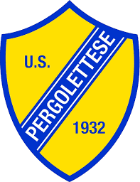

Pergolettese

L'Unione Sportiva Pergolettese 1932 S.r.l., meglio nota come Pergolettese, è una società calcistica italiana con sede nella città di Crema. Milita in Serie C, la terza divisione del campionato italiano.
Fondata nel 1932, è per tradizione sportiva la prima squadra della città con 37 stagioni professionistiche disputate.
Ha assunto il corrente appellativo ed assetto societario nel giugno del 2012 dopo che il tribunale locale decretò il fallimento dell'"U.S. Pergocrema 1932". Tra giugno e luglio la FIGC ne dispose la radiazione[1] e conferì la tradizione sportiva al Pizzighettone, previo cambio di ragione sociale e trasferimento della sede a Crema.
La squadra vanta tredici partecipazioni alla terza serie professionistica e un decimo posto come miglior risultato. La Pergolettese è inoltre al primo posto - insieme alla Pro Vercelli - per quanto riguarda la classifica delle presenze nel campionato di Serie C2/Lega Pro Seconda Divisione, cui ha preso parte per 24 volte.